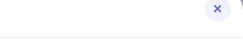
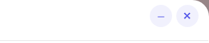
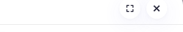
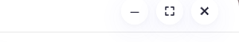
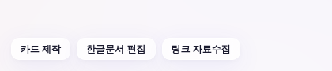

운영자 지시 260805 「콘텐츠 제작에 있는거 리스트업 + 각각 X 버튼 옆에 최소화 버튼」 ·
최소화 = 보드 숨김(작업·러너 폴링 그대로 생존) + 하단 왼쪽 복원 독 칩 · 실측 = tools/scratch/probe_tmin_ba.mjs(12개 도구 전건 헤드리스) · 실API·실데이터 미접촉.
데스크톱 nav ▸ 콘텐츠 제작(_contentMenuBuild). 최소화(─)는 모달형 도구 전부에 배선 — 새 탭으로 뜨는 「누끼따기」만 브라우저 창 최소화가 이미 있어 대상 밖.
| # | 메뉴 | 진입 함수 | 최소화 | 설명(메뉴 주석 기준) |
|---|---|---|---|---|
| 1 | 카드 제작 | openCardMaker | ─ 추가 | 사진 첨부 → 비율 절삭 + 문구 → PNG 내려받기 |
| — | 로고 제작 (메뉴 숨김 중) | openLogoMaker | ─ 추가 | 260805 메뉴에서 내림 — 함수는 살아 있어 같은 계약으로 배선(재노출 대비) |
| 2 | 카카오 메세지 설계 | openKakaoDesigner | ─ 추가 | 공연 상세 링크 → 포스터 OCR → 카카오 76자 문구 후보 |
| 3 | 네이버 블로그 | openNaverBlogTool | ─ 추가 | 블로그 글쓰기 도우미 |
| 4 | 한글문서 편집 | openHwpEditor | ─ 추가 | hwp/hwpx 올림 → 미리보기 → 말로 수정(러너 편집) |
| 5 | 오피스문서 편집 | openOfficeEditor | ─ 추가 | 워드·엑셀·PPT 올림 → 말로 수정 → 내려받기(러너 편집) |
| 6 | 용량 줄이기 | openFileSlimmer | ─ 추가 | 엑셀·PPT·워드·한글·PDF 사진 재인코딩 = 용량 축소 |
| 7 | 문서 → 마크다운 | openDocMd | ─ 추가 | 21종 문서 올림 → 깔끔한 마크다운(러너 변환) |
| 8 | 링크 자료수집 | openLinkGrab | ─ 추가 | URL 붙여넣기 = 사진·영상·문서·음성 일괄 다운로드 |
| 9 | 누끼따기 | window.open('cutout/') | 대상 밖 | 독립 도구 새 탭(noopener) — 창 최소화는 브라우저 몫 |
| 10~12 | 영상 편집기 1·2·3 (영상 편집·자막 삽입·영상 프롬프팅) | openVideoEditor | ─ 추가 | 한 도구·탭 진입점 3개 = 모달 1개에 배선 |
| 13 | PLAY ZONE ▸ 도화지 | openBookingProcess | ─ 추가 | 다이어그램 에디터 — 헤더가 .bp-x 버튼열(전체화면 토글 좌측에 삽입 = 최소화·전체화면·닫기 창 규약 순서) |
| 14 | PLAY ZONE ▸ 에니어그램 | openEnneagram | ─ 추가 | iframe 임베드 — ↗ 새 탭·전체화면·닫기 버튼열에 같은 순서로 삽입 |
모달형(카드 제작 등 10곳) = .modal-x 부품 그대로 글자만 ─(U+2500), X 왼쪽 6px 간격 · 도화지·에니어그램 = .bp-x 부품, 최소화·전체화면·닫기 순.





display:none — DOM·타이머·업로드가 그대로 살아, 한글·오피스·용량 줄이기의 러너 작업이 뒤에서 계속 돈다(긴 작업 중 다른 화면 보기 = 이 버튼의 핵심 용도)..modal-x/.bp-x에 글자 ─(X 정본 게이트⑦의 X_FAMILY 밖 = 별개 버튼으로 판정) · 칩 = .bp-tbtn · 독 z = --z-toast(고아 토큰 재활성). 신규 색·클래스·raw hex 0.실코드와 같은 부품 문법(원형 버튼 = .modal-x 레시피 · 칩 = .bp-tbtn 레시피)으로 만든 축소 모형. ─를 눌러보세요.
npm run check ✓ — check_design raw hex 1578/1578 무변 · 신규 색·토큰·:root·CSS 클래스 0(독은 #tmin-dock id 규칙 1줄 + 모바일 오프셋 = .toast 미러) · X 아이콘 버튼 83개 전건 정본 유지 · check_refs ✓ · build_annual_yr ✓.npm run smoke ✓ · npm run smoke:layout ✓(1920×1080 이젤 계약 유지).tools/scratch/probe_tmin_ba.mjs PASS — 12개 도구 전건: 열기 → 최소화(숨김+칩) → Esc 무해 → 재진입 복원(같은 DOM 노드 동일성으로 판정) → 칩 정리 · 도화지 스크롤락 계약 · 칩 3개 독 · pageerror 0.산출: docs/reports/260805_콘텐츠제작_최소화_전후/ · 하네스: tools/scratch/probe_tmin_ba.mjs · 본체 diff: index.html(공용 인프라 _tmin* + 12개 도구 배선)